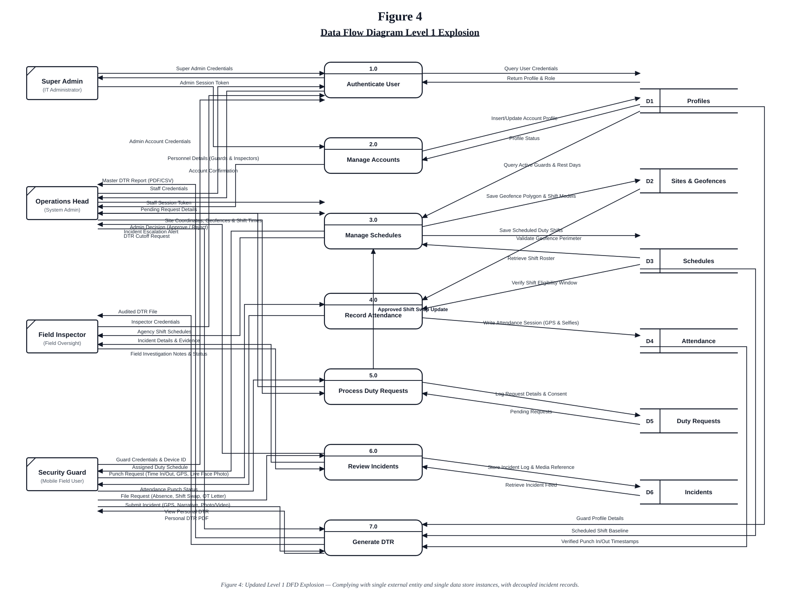

Issue: Guard, Operations Head, and Inspector were repeated up to 4 times down the left side.
Solution: Grouped into exactly 4 distinct entities on the far left: Super Admin, Operations Head, Field Inspector, and Security Guard. Each entity appears only once.
Issue: D3 Schedules was drawn twice (once near 3.0 and again near 7.0).
Solution: Each data store (D1 to D6) appears exactly once on the right column. Process 7.0 (Generate DTR) routes its input line directly to the single D3 Schedules data store.
Issue: An erroneous arrow connected D6 Incidents to 7.0 Generate DTR.
Solution: Decoupled completely. In reality, incident reports do not modify payroll hours. DTR is strictly generated from D4 Attendance, D3 Schedules, and D1 Profiles.

Figure 4 illustrates the Level 1 Data Flow Diagram (DFD) explosion of the Web-Based Security Agency Management System with Mobile Application for Real-Time Monitoring, detailing the movement of data between the four external entities, seven core system processes, and six central data stores. Each external entity and data store appears as a single instance to preserve standard structural hierarchy.
System access begins with Process 1.0 (Authenticate User), where login credentials from the Security Guard, Operations Head, Field Inspector, and Super Admin are validated against D1: Profiles. Administrative account governance is handled in Process 2.0 (Manage Accounts) to maintain personnel records and platform privileges. Process 3.0 (Manage Schedules) allows the Operations Head to configure deployment site boundaries in D2: Sites and formulate shift schedules in D3: Schedules, while also supplying approved duty schedules to security guards and field inspectors.
Field operations are managed through Process 4.0 (Record Attendance), where the Security Guard submits timekeeping punches paired with GPS coordinates and live face capture selfies, verifying presence against D2: Sites and D3: Schedules before committing timestamps to D4: Attendance. Process 5.0 (Process Duty Requests) handles absence filings and shift swaps with attached authorization letters; when the Operations Head approves a shift swap, the update is piped directly into Process 3.0 to automatically update D3: Schedules. In Process 6.0 (Review Incidents), incident documentation with photos and video is saved to D6: Incidents for investigation and status tracking by the Field Inspector and Operations Head. Finally, Process 7.0 (Generate DTR) compiles verified work hours by cross-referencing punch timestamps from D4: Attendance with scheduled baselines from D3: Schedules and guard profile data from D1: Profiles, generating automated Daily Time Records for payroll auditing and export.